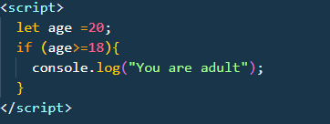
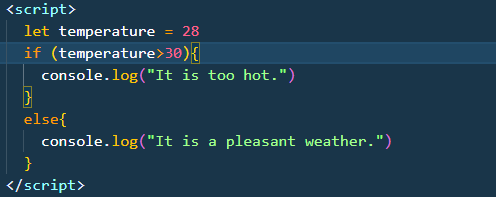
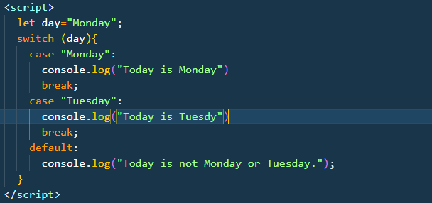

Conditional statements
Conditional statements, also known as decision-making statements, are used in programming to execute different blocks of code based on certain conditions. These conditions determine which block of code should be executed.
There are mainly three types of conditional statements in JavaScript:
- if statement: It executes a block of code if a specified condition is true.
- if....else statement:It executes a block of code if a specified condition is true; otherwise, it executes another block of code.
- switch statement:It selects one of many code blocks to be executed.
- if statement:
if(condition){
//code block will execute if condition is true
Example:

}
-
if...else statement
if(condition){
//code of block to be executed if condition is true
}
else{
//code of block to be executed if condition is false
}
Example:

-
switch statement
switch (expression){
case value1:
//Code block to be executed if expression equals value1
break;
case value2:
//Code block to be executed if expression equals value2
break;
default:
// Code block to be executed if expression doesn't match any case
}
Example:
